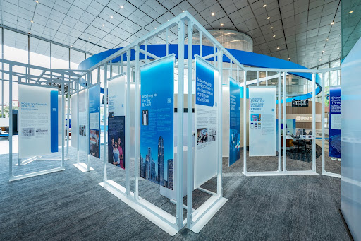
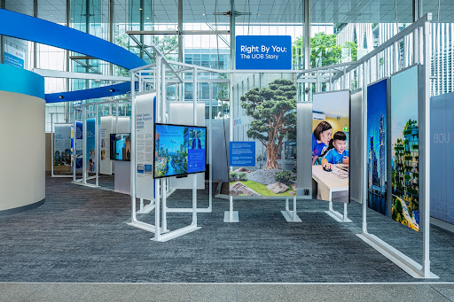
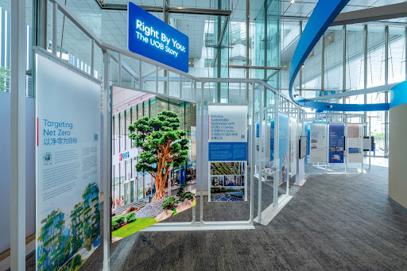

The UOB Gallery:
Nine Decades of Vision
A commemorative brand experience celebrating heritage through immersive digital storytelling and physical engagement.

Experience Design
The exhibition was conceived as an immersive journey. We transformed static historical archives into a living, breathing narrative using reactive projection mapping and spatial audio.
Ninety years of banking excellence brought to life in a singular architectural space.
Interactive Touches Weekly
Heritage Integration
To celebrate UOB's journey, we bridged the gap between 1935 and the future. This required a meticulous balance: honoring the traditional values of trust and stability while signaling a tech-forward trajectory.
Physical artifacts were paired with digital "echoes"—holographic overlays that revealed the story behind every ledger and historical photograph.

The Strategic Approach
Narrative Curation
Filtering nine decades of complex financial history into three distinct, emotional storytelling pillars.
Sensory Interaction
Designing touch-less interfaces that respond to visitor movement, creating a seamless gallery flow.
Future Visioning
Ending the experience with a data-driven projection of the next decade of digital banking.
"The UOB Gallery isn't just an exhibition; it's a testament to how banking brands can bridge their history with a high-fidelity digital future."— Lead Brand Strategist
Ready to Elevate Your Brand's Narrative?
Whether it's heritage integration or future-forward digital experiences, let's create something extraordinary.